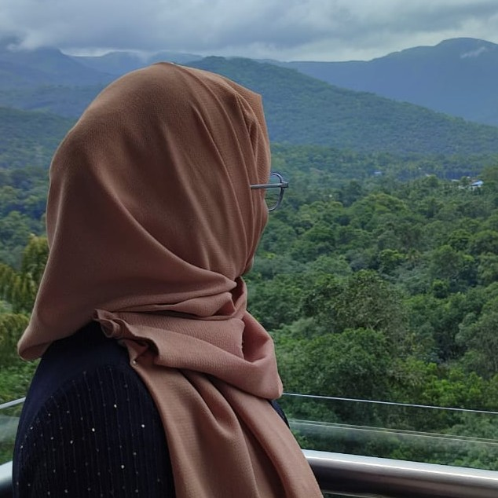

Diving into web development with some fun and simple projects—each line of code tells a story of learning, growth, and a whole lot of curiosity! As a passionate beginner, I love experimenting with ideas, turning them into little creations, and discovering the endless possibilities of coding. These pages might be small steps, but for me, they're the start of something exciting and meaningful!
Take a look at some of the basic webpages I’ve created so far—it’s just the beginning, but every click and line of code has been such
an exciting adventure!
(Simply click the name or preview to see the webpage in action.)
A simple yet engaging webpage that showcases my favorite shows and movies, complete with descriptions, images, IMDb ratings, and genres. This project reflects my early HTML skills and combines my love for storytelling with a creative approach to web design.
__________Here's a little Preview:__________
A fun and quirky birthday invitation webpage I created, showcasing playful design, basic HTML structure, and a touch of humor to set the celebratory mood. This project highlights my enthusiasm for web development and my ability to bring personal flair to my work!
__________Here's a little Preview:__________

A fun and personal list of my top 5 favorite websites, where I share my love for platforms like Spotify, Pinterest, FlixHQ, Webtoon, and ChatGPT. This project showcases my ability to integrate images, links, and playful descriptions, bringing a bit of personality into basic web development.
__________Here's a little Preview:__________

The Soul Behind the Screen?
